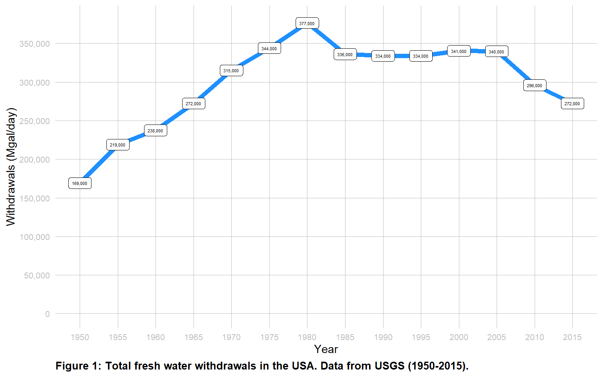
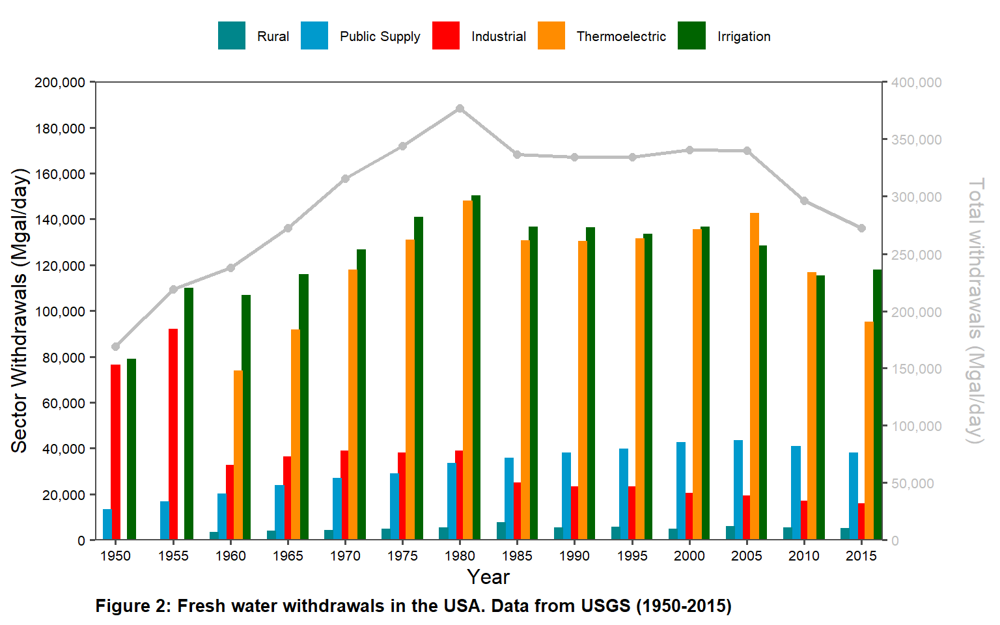
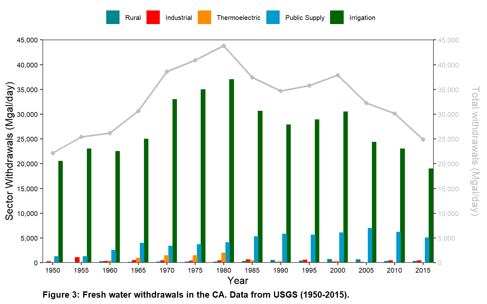
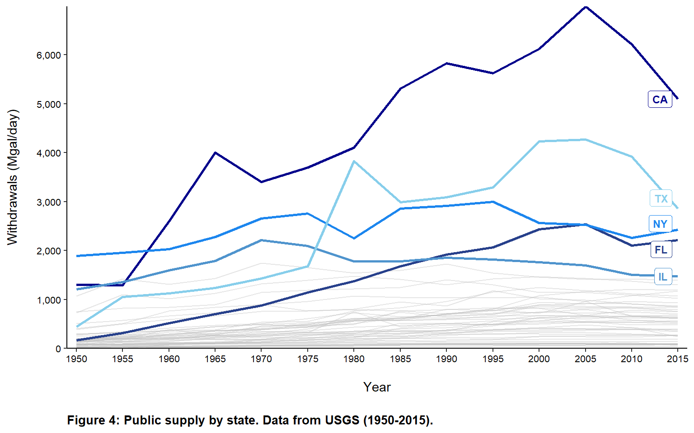
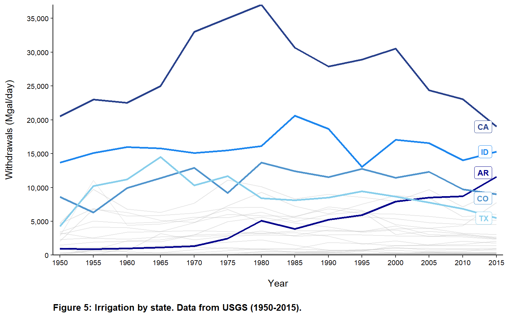
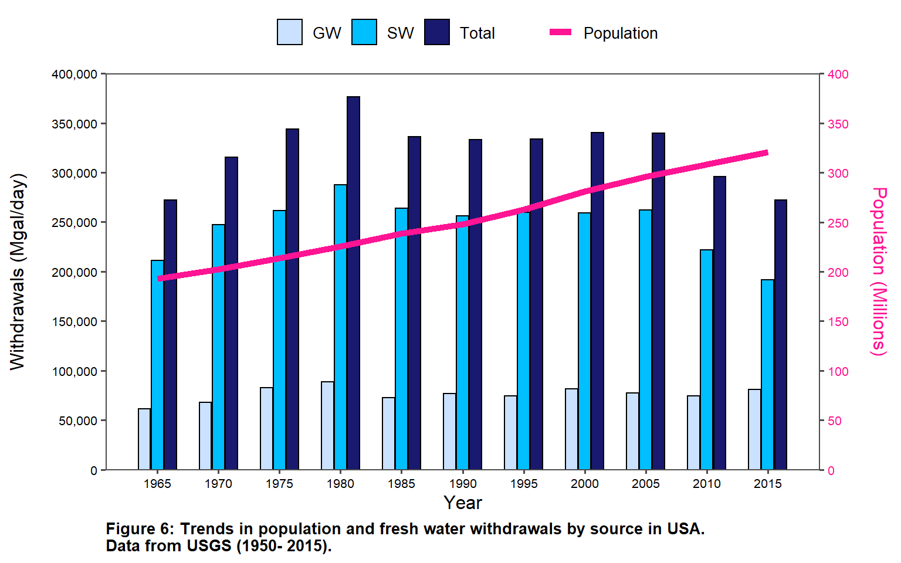
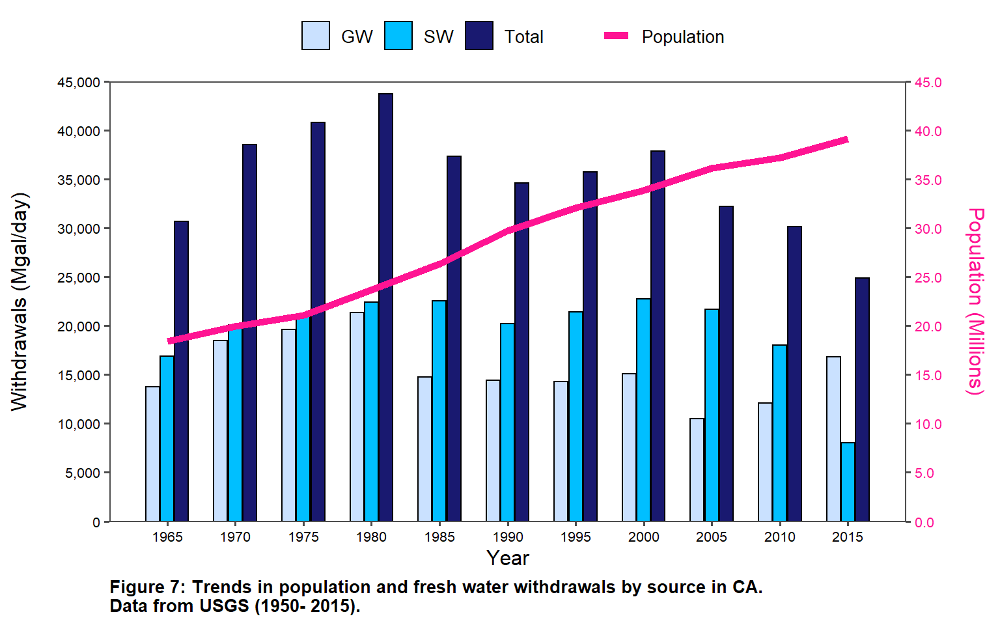
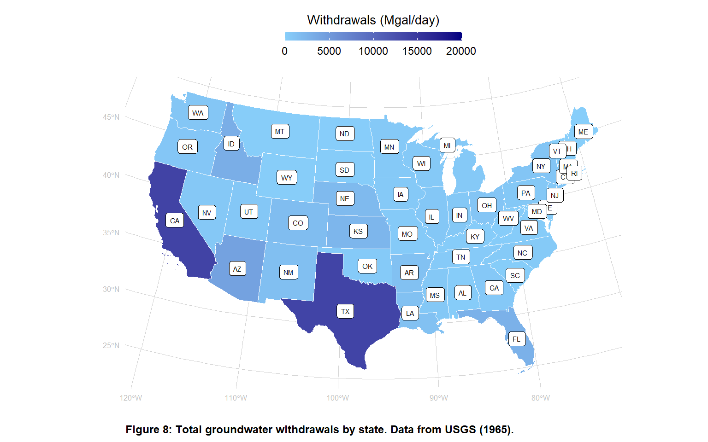
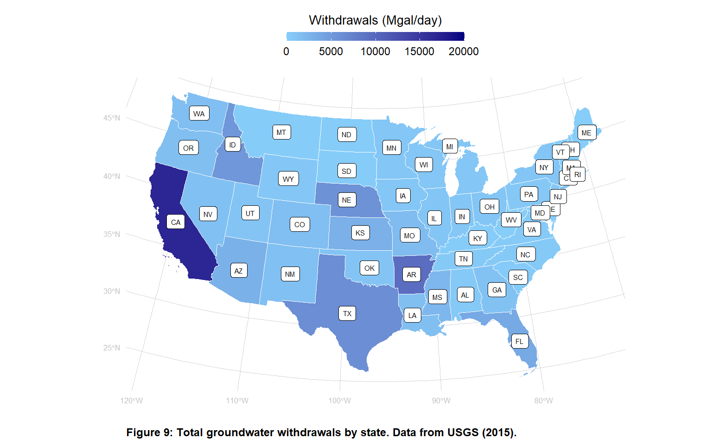

The data for this lab are available from the United States Geological Survey for years 1950-2015.
Step 1: Load libraries
Step 2: Read data
Step 3: Organize data by sector and FIPS (definition here)
Step 4: Combine data

Step 5: Update code – implementing feedback from prelab 07 and lab 07
Prelab 07 Code and Data check
The code follows best practices.
I used the function X, which automatically accounts for a tab delimited file.
The code has been edited. I have looked through all the datasets and carefully selected the columns that should be numeric, including all FIPS columns from every dataset. I checked to make sure that state acronyms and names and county names, etc. were not changed to numeric. The reason it is important to coerce the FIPS into numeric for all datasets is because [explain why this is important].
I did not get an error. I used x, which [explain why x works in your own words; that is, your explanation should be unique to your understanding of what is happening].
I filtered the dataset for 1990. The reason I needed to do this is because [explain why].
Lab 07 Code and Data check
I deselected the extra columns. I have X and Y variables in d_wu_1950 and d_wu_1955, respectively.
I replaced column tags X and Y with Z. I did this because [explain why].
Data are presented differently for 1985 and afterwards than prior to 1985. The reason for this is [explain the way in which our datasets are different]. I accounted for this by [explain what you did and why you needed to do this.]
Step 6: Organize data for plotting timeseries of sectoral withdrawals for USA
 What is the take-home message from the plot, with respect to water use by sector, over time?
[Add discussion here]
This plot is different than the USGS plot.
[Add discussion here]
Step 7: Organize data for plotting timeseries of sectoral withdrawals for CALIFORNIA
 What transformation did you pick and why?
I picked a one-for-one transformation. I did this because irrigation is so large that any other transformation resulted in the bar plot overlapping the line plot in ways that impeded reading the data, which was distracting. I decided to keep the second axis (even though I could have gotten away without it) because it represents a different type of withdrawals: total vs sector withdrawals.
What is the take-home message from the plot, with respect to water use by sector, over time in your state?
Total water withdrawals peaked in 1980 and have declined since. Irrigation is by far the largest sector to withdraw freshwater in CA, with public supply as the second largest sector to withdraw freshwater. Water withdrawals for public supply are currently one-fifth of water for irrigation; public supply withdrawals peaked in 2005 and appears to be declining.
What are the similarities and differences between the USA portfolio and your state’s portfolio? The main differences between the USA and CA is that the USA’s largest water users are thermoelectic and irrigation, but water withdraws for thermoelectric are near zero for CA; this is likely because CA does not have many once-through power plants. The similarities are with irrigation, likely because the Central Valley is a huge agricultural hub for the USA.
Step 8: Organize data for plotting timeseries of each state’s freshwater use

What is the take-home message from the two timeseries plots?
[Add discussion here]
Step 9: Organize data for plotting timeseries of gw and sw withdrawals
 What is the take-home message from the plot, with respect to water use by each source, over time?
[Add discussion here]
This plot juxtaposes water use and population. What is the take-home message from the plot, with respect to TOTAL water use and POPULATION over time?
[Add discussion here]
Step 10: Organize data for plotting timeseries of gw and sw withdrawals for CA
 What is the take-home message from the plot, with respect to water use by each water source (GW and SW), over time?
[Add discussion here]
This plot juxtaposes water use and population. What is the take-home message from the plot, with respect to TOTAL water use and POPULATION over time?
[Add discussion here]
How are the patterns seen in the USA plot different and similar to your state plot?
[Add discussion here]
Step 11: A map of groundwater withdrawals by state 1965 compared to 2015

What is the take-home message from the two maps?
[Add discussion here]
The unique artistic approach I took included:
[Add discussion here]